Your look, on real parts
You picked A's open layout with B's rounded touches. Here it is applied to buttons, filters, settings rows, game rows, the floating bottom bar and a real game page (Steelers at Bengals, halftime, real win probability). The three options only differ in typeface and roundness. New here: the plain-English status line under the score and the Marks currency icons.
Inter, airy
The most neutral and readable. Medium roundness, the most space between rows.


Manrope, soft
Rounder letters and the roundest corners, with a slightly stronger glow at the top. The friendliest of the three.


Geist, crisp
Tighter, more technical letters, smaller corners and denser rows. Fits the most on screen.


Marks icon
Three original icon ideas for the currency: Tick, Score lines, Notch. The balance line shows how it would sit on your profile.
Round 2 questions
- Which option, 1, 2 or 3? (Or mix, like "2's font with 3's corners".)
- Is the plain-English line under the score ("Bengals lead by 21 · Halftime…") the right size and tone?
- Which Marks icon: Tick, Score lines or Notch?
Three looks for Scoreline
Each option is the same home screen, drawn with today's real NFL, NBA and college games (Sunday, Nov 15, Steelers–Bengals just kicked off). All three are monochrome and drop the orange; they differ in type, spacing and how much "surface" the screen has. Pick one, or mix.
Quiet
No cards at all: hairline dividers, generous rows, small uppercase section labels, Inter. Closest to a premium reading app; the scores do all the work.
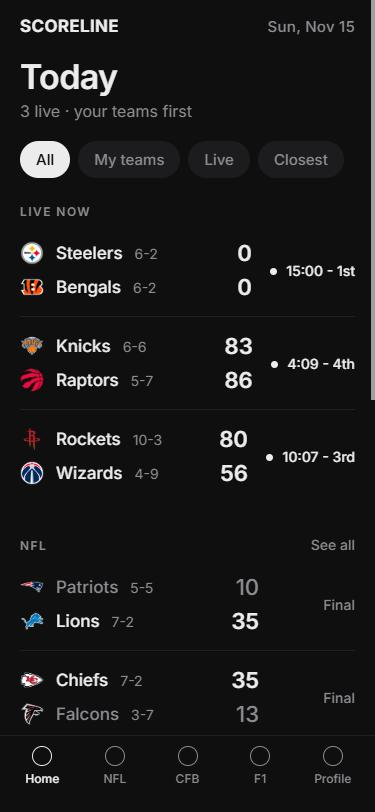
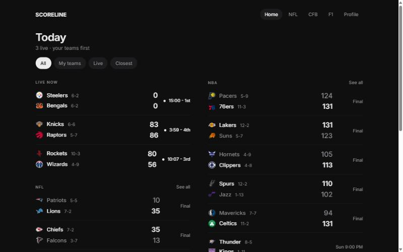
Soft
One rounded surface per section, a floating pill nav, a faint light glow at the top, Manrope. Feels more like a modern native app; a little more structure than A.
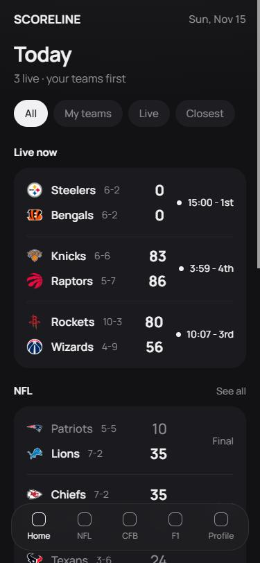
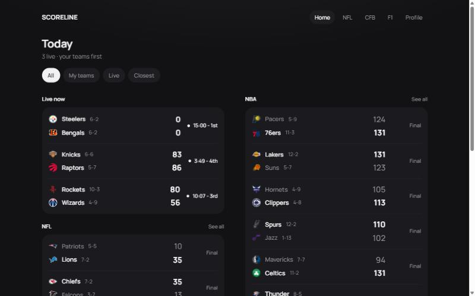
Paper
Light by default: warm off-white, near-black type, larger tighter headings, Inter Tight. Calm in daylight; dark mode would be a setting.
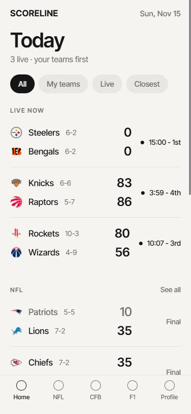
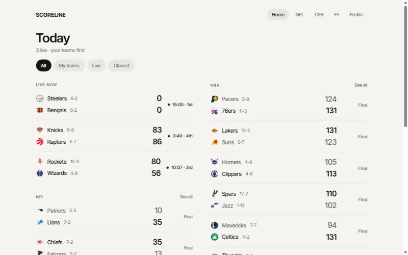
Nav icons are plain placeholders in all three; real icons come with the design system in round 2. The bottom nav shows the planned "pinned sports + Profile" layout.
Scoreline today
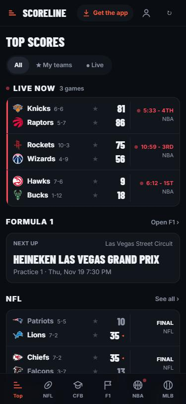
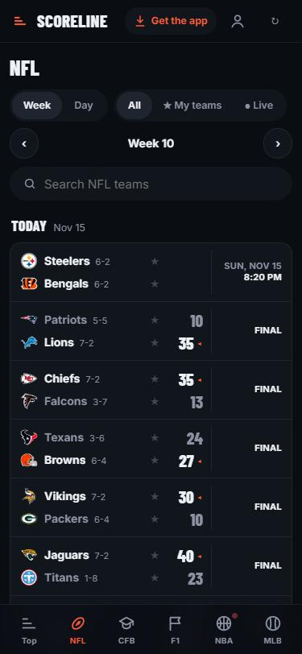
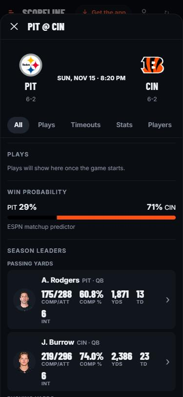
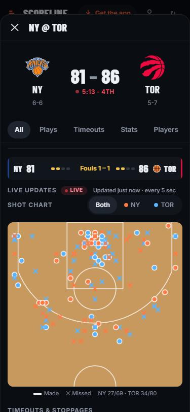
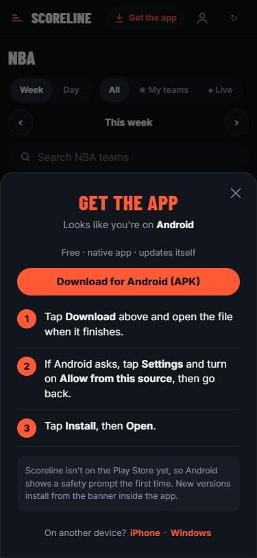
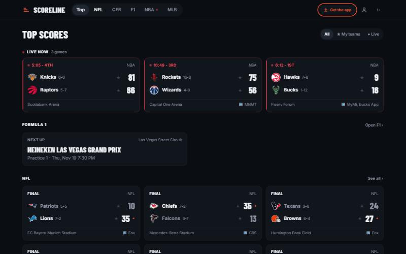
Audit and proposed fixes
- Four rows of controls before the first scoreWeek/Day, All/My teams/Live, week arrows and a search box stack up on every sport tab. Fix: one filter row and a date strip; search becomes an icon.
- Two stars on every gameA ★ beside each team adds 2 buttons per row and is easy to tap by accident. Fix: follow teams from the team page and Profile; show a small mark only on teams you follow.
- Too many sports in the bottom barTop, NFL, CFB, F1, NBA, MLB, plus Alerts in the app. Fix: pinned sports only, Profile in the bar, everything else reachable from Home.
- Header buttons that duplicate other things↻ refresh (scores already refresh themselves and pull-to-refresh exists), a logo mark that looks like a menu but does nothing, and a profile icon that should live in the bar. Fix: remove ↻ and the fake menu; move Profile.
- Orange and red everywhereOrange buttons, red live borders and red clocks read as warnings. Fix: monochrome; live shown with a small dot.
- Shouting headingsEvery title is in a tall all-caps display font. Fix: one calm type family with a clear size scale.
- Game page leads with the wrong thingsLive NBA opens with fouls and a big shot chart; win probability is far down. Before kickoff the first section says "Plays will show here once the game starts." Fix: score, plain-English status line, win probability, then details behind tabs.
- Game page tabs overflowAll · Plays · Timeouts · Stats · Players doesn't fit, and "Timeouts" is niche. Fix: Summary · Plays · Stats · Players, with timeouts inside Plays.
- Technical labels"Live updates · every 5 sec", "ESPN matchup predictor", "Week 11". Fix: plain words ("Updating live").
- Alert settings are hard to readThe Always → Playoffs → Super Bowl cascade toggles take explaining. Fix: one choice per alert (Always / Playoffs only / Off) in a single list.
- Inconsistent wording"Top Scores" vs "Top", "See all" vs "Open F1", "Favorite" vs "Follow". Fix: one word per thing everywhere.
- Bugs found while auditingA season-leader stat block wraps its last number onto a new line; the profile button didn't respond once in testing; the installed Android app still isn't reaching the alert sender.
Questions for you
- Which option do you like most: A, B or C?
- What do you like about it?
- What would you change? Mixing is fine, like "A's layout with C's headings".
- Should the default be dark (A, B) or light (C)? Either way, both will exist in Settings.